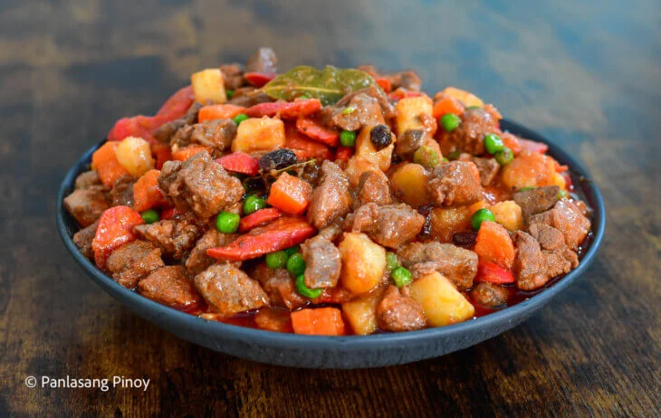

Filipino menudo is a popular, hearty stew consisting of diced pork, pork liver, potatoes, carrots, and raisins simmered in a savory tomato-based sauce. It is a festive, frequently served dish, characterized by its colorful diced ingredients and frequently enhanced with sausages, hot dogs, and bell peppers.